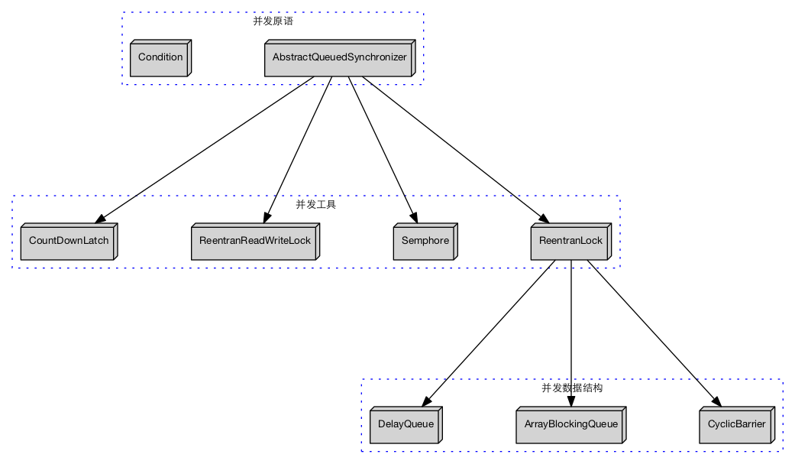
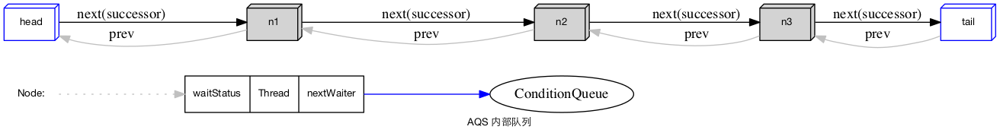
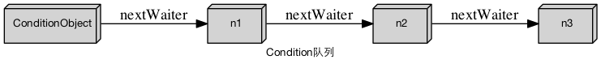

Java 并发包：java.util.concurrent 非常有名，是Java 并发编程的基础。
AbstractQueuedSynchronizer 是 这个库设计的中心，为并发原语，并发工具以及更高层的并发数据结构，提供了基础设施。

AQS内部使用CLH队列作为同步的数据结构，等待获取锁的进程挂在这个队列上面。使用的是CLH的改进版本。
CLH 队列实现为FIFO的链表，head 指针与 tail 指针索引，插入在队尾，删除在队首。
CLH 队列的好处是对于竞争有好的性能，没用内存聚集访问，不会导致热点竞争，每个线程只要判断相邻节点的状态就能确定是否能够拥有锁。
唤醒只要检查head。在获取的时候，先将自身加入队列，然后在尝试判断是否处于队列的head，如果是则尝试获取。否则Park等待。

一个Node代表了一个等待着的线程，以及一些用来实现链接表的数据字段和代表等待的状态。
将自身加入队列，然后判断是否处于head，如果是则dequeue，否则park等待。
从head处唤醒head指向的节点next节点，注意head被设置为此节点。
取消队列中的节点（线程），设置CANCEL标志，next 指向自身。后续的别的acquire操作会有清理Cancel节点的操作，将他们移出CLH队列。
AQS 提供Lock（这里指AQS队列）基础原语外，还提供Condition，一个Lock上面可以有多个Condition，每个Condition在内部是一个队列，操作此队列之前，线程已经获得了Lock上面的锁，所以没用竞争问题。
nextWaiter字段将同一个Condition上面的多个等待线程（Node）链接起来。
ConditionObject代表一个Condition。

LockSupport 提供park 和 unpark 方法完成底层的线程挂起和唤醒。内部使用了unsafe。
操作对象的字段，进行CAS都使用了vm提供的底层对象unsafe。
ExecutorPool 的Worker 的实现，继承了AQS。